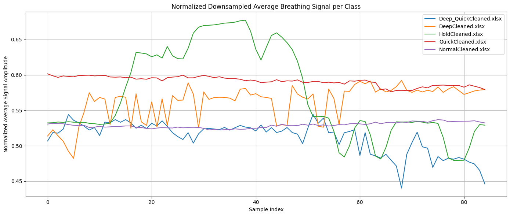

💻 Code Samples
1D CNN Model Architecture
# 1D CNN Model
model = Sequential([
Input(shape=(85, 1)),
Conv1D(32, 3, activation='relu', kernel_regularizer=l2(0.001)),
MaxPooling1D(2),
Dropout(0.2),
Conv1D(64, 3, activation='relu', kernel_regularizer=l2(0.001)),
MaxPooling1D(2),
Dropout(0.3),
Flatten(),
Dense(64, activation='relu', kernel_regularizer=l2(0.001)),
Dropout(0.5),
Dense(5, activation='softmax')
])
Training Loop
# Training Configuration
model.compile(optimizer=Adam(learning_rate=1e-4),
loss='sparse_categorical_crossentropy',
metrics=['accuracy'])
# === Callbacks ===
checkpoint = ModelCheckpoint('best_breathing_model.keras', monitor='val_accuracy', save_best_only=True, verbose=1)
early_stop = EarlyStopping(monitor='val_loss', patience=15, restore_best_weights=True, verbose=1)
# === Training ===
history = model.fit(X_train, y_train,
validation_data=(X_val, y_val),
epochs=1000,
batch_size=32,
callbacks=[checkpoint, early_stop],
verbose=1)
LSTM Model Architecture
# LSTM Model
model = Sequential([
Input(shape=(X_train.shape[1], X_train.shape[2])),
LSTM(64, return_sequences=True),
LayerNormalization(),
Dropout(0.3),
LSTM(32),
LayerNormalization(),
Dropout(0.3),
Dense(32, activation='relu'),
Dense(num_classes, activation='softmax')
])
Training Loop
# Training Configuration
model.compile(
loss='categorical_crossentropy',
optimizer='adam',
metrics=['accuracy']
)
model.summary()
# === Callbacks ===
early_stop = EarlyStopping(monitor='val_loss', patience=7, restore_best_weights=True)
reduce_lr = ReduceLROnPlateau(monitor='val_loss', factor=0.5, patience=3, min_lr=1e-5, verbose=1)
# === Training ===
history = model.fit(
X_train, y_train,
validation_split=0.2,
epochs=100,
batch_size=64,
callbacks=[early_stop, reduce_lr],
verbose=2
)
GRU Model Architecture
# GRU Model
input_layer = Input(shape=(X_train.shape[1], X_train.shape[2]))
x = Bidirectional(GRU(128, return_sequences=True))(input_layer)
x = Dropout(0.5)(x)
x = LayerNormalization()(x)
x = Bidirectional(GRU(64))(x)
x = Dropout(0.4)(x)
x = LayerNormalization()(x)
x = Dense(64, activation='relu')(x)
x = Dropout(0.3)(x)
x = LayerNormalization()(x)
output_layer = Dense(num_classes, activation='softmax')(x)
model = Model(inputs=input_layer, outputs=output_layer)
Training Loop
# Training Configuration
optimizer = AdamW(learning_rate=0.001, weight_decay=1e-5)
model.compile(loss='categorical_crossentropy', optimizer=optimizer, metrics=['accuracy'])
# === Callbacks ===
lr_scheduler = ReduceLROnPlateau(monitor='val_loss', factor=0.5, patience=5, min_lr=1e-5, verbose=1)
early_stop = EarlyStopping(monitor='val_loss', patience=10, restore_best_weights=True, verbose=1)
# === Training ===
history = model.fit(
X_train, y_train,
validation_data=(X_test, y_test),
epochs=100,
batch_size=32,
callbacks=[lr_scheduler, early_stop],
verbose=2
)
📈 Training Data

Preprocessing
# Prprocessing Dataset
# Load the Excel file into a pandas DataFrame
df = pd.read_excel(fn)
# Remove rows with 0 or null values
df_cleaned = df.replace(0, pd.NA).dropna()
# Normalized Downsampling and Averaging
normalized_averaged_signals = []
for i, df in enumerate(dfs):
# Normalize the data
df_normalized = (df - df.min()) / (df.max() - df.min())
# Downsample to min_samples
df_sampled = df_normalized.sample(n=min_samples, random_state=42)
# Calculate the mean of each column (signal)
mean_signal = df_sampled.mean(axis=0)
normalized_averaged_signals.append(mean_signal)
# Create a new DataFrame for the normalized and downsampled data
new_df = pd.DataFrame(df_sampled)
# Save the downsampled data to a new Excel file
filename = filenames[i].split('.')[0] # Get the filename without extension
new_filename = f"{filename}_Training_2.xlsx"
new_df.to_excel(new_filename, index=False)
files.download(new_filename)